MASHERR / INSTAGRAM

Estrategia de contenido · placas y stories
EL MOSTRADOR,
ABIERTO EN
INSTAGRAM.
Contenido humano, minimalista y pensado para vender: placas listas, textos y calendario.
@masherrferreteriamasherrferreteria.com.ar
 La idea
La ideaLa idea
VENDER CON CARA Y CRITERIO.
Instagram de Masherr no es un catálogo: es el mostrador abierto. Cada publicación muestra un producto real, una persona real (Guido) o un cliente real, y termina con un paso para comprar.
| Principio | Cómo se ve |
|---|
| Humanizado | Guido habla en primera persona, la familia, el local, las reseñas de clientes. |
| Minimalista | Fondo blanco, gris claro o negro; una sola idea por placa; mucho aire. Sin precios en las placas. |
| Orientado a venta | Producto grande y siempre un llamado: “Consultá precio y stock” en la web, WhatsApp o el local. |
| Coherente | Mismos colores, tipografía, logo y pie en todas las piezas. |
Masherr · Instagram02 / 12
Pilares
Pilares
CINCO TIPOS DE CONTENIDO.
| Pilar | Para qué | % del mes |
|---|
| Producto con precio | Vender: producto de la semana, combos, ingresos. | 35 % |
| Asesoramiento | Mostrar criterio: comparativas, consejos de ferretero, mitos. | 25 % |
| Personas | Generar confianza: Guido, la familia, el local, detrás de escena. | 15 % |
| Prueba social | Reseñas reales de Google y clientes contentos (con permiso). | 15 % |
| Cómo comprar / empresas | Explicar la web, el pedido por WhatsApp y las cotizaciones. | 10 % |
Los reels del plan de 15 videos y del guion de rodaje alimentan los mismos pilares: una placa y un reel del mismo tema se refuerzan entre sí.
Masherr · Instagram03 / 12
Diseño
Diseño
REGLAS DE DISEÑO.
| Formatos | Post 1080 × 1350 (4:5, ocupa más pantalla) · Story 1080 × 1920. |
| Colores | Azul #17256B, negro #08090B, blanco y gris #EEF0F4. Celeste #9AAEFF solo sobre fondo oscuro. |
| Tipografía | DejaVu Sans Condensed Bold para títulos, DejaVu Sans para textos. |
| Producto | Sobre gris claro, grande, sin sombras ni efectos. Sin precio: botón azul “Consultá precio y stock”. |
| Rótulo | Línea + palabra en mayúsculas arriba: PRODUCTO DE LA SEMANA, CONSEJO, COMBO. |
| Pie | Logo + llamado a la acción, siempre en el mismo lugar. |
| Fotos | Reales: Guido, el local, productos en el mostrador. Sin imágenes generadas. |
| Grilla | Alternar claro / oscuro / azul para que el perfil se vea ordenado. |
Evitar: fondos con degradados, muchas tipografías, textos largos en la placa, estrellas de “oferta” y colores fuera de la paleta.
Masherr · Instagram04 / 12
Grilla
Grilla
LAS 9 PLACAS DEL PRIMER MES.
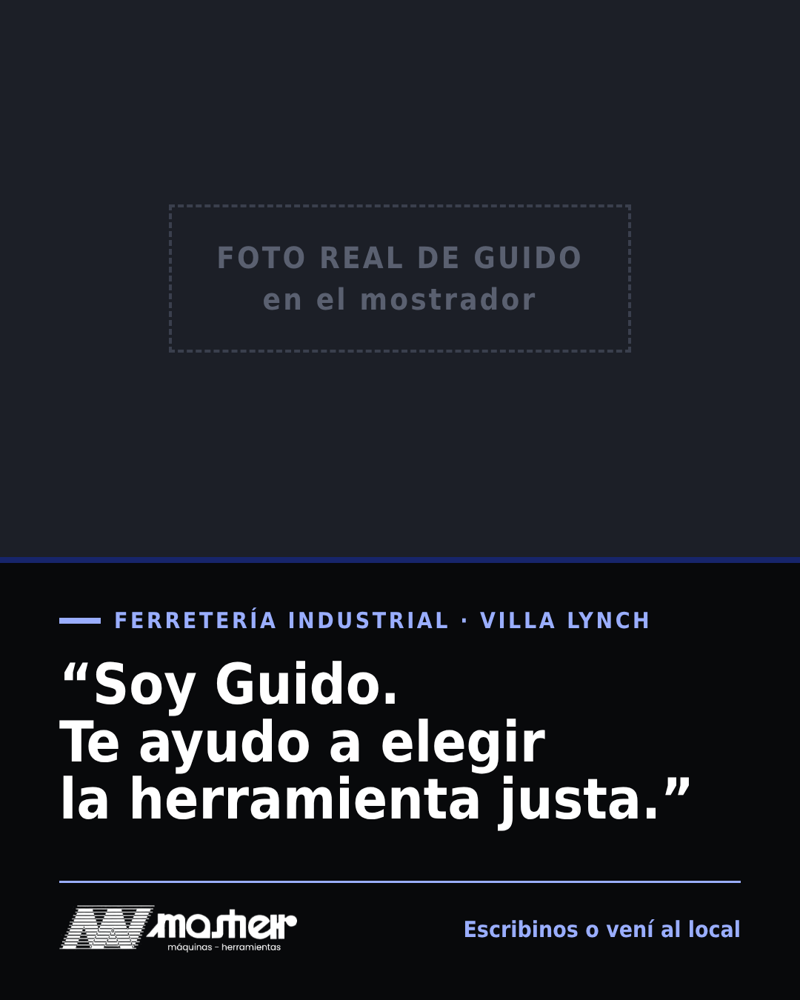
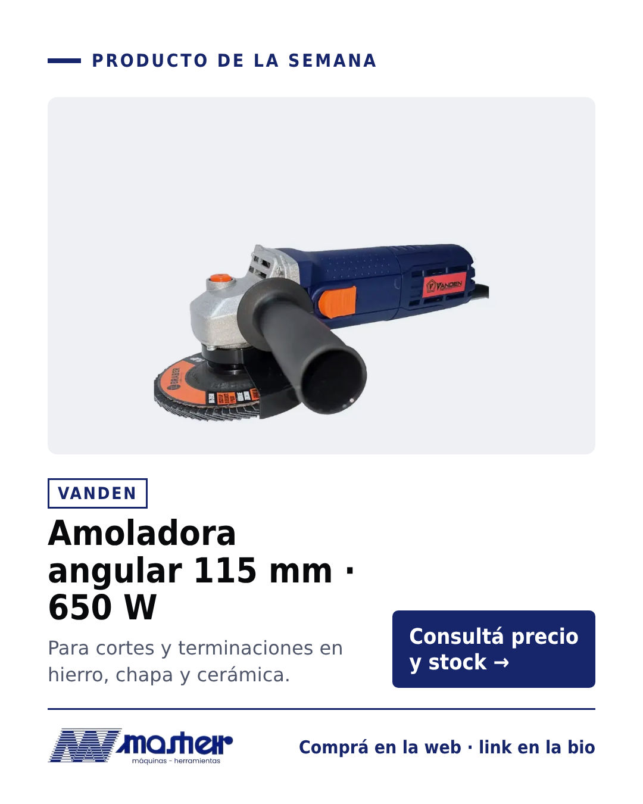
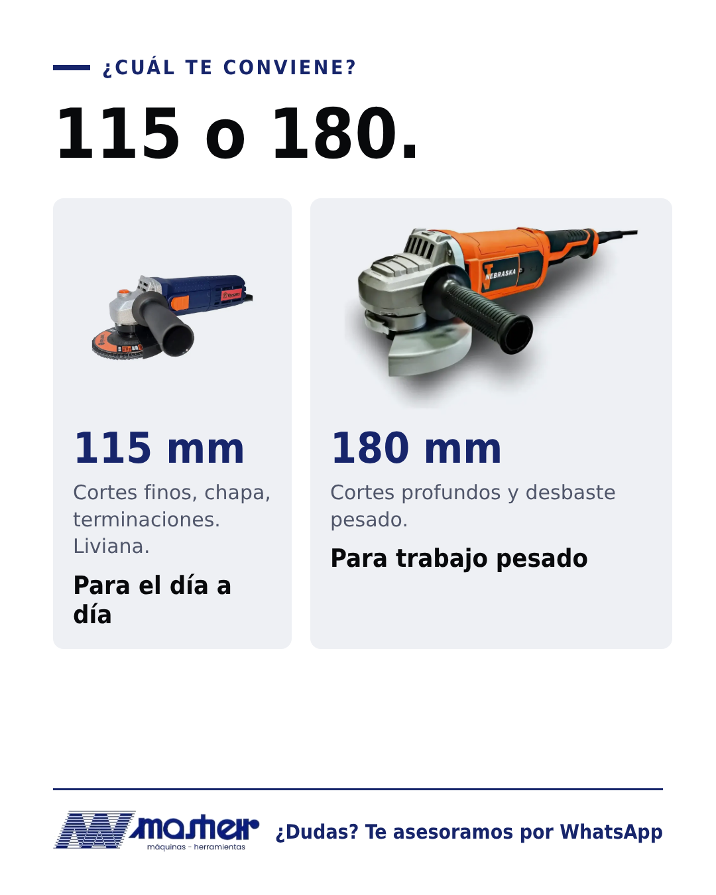
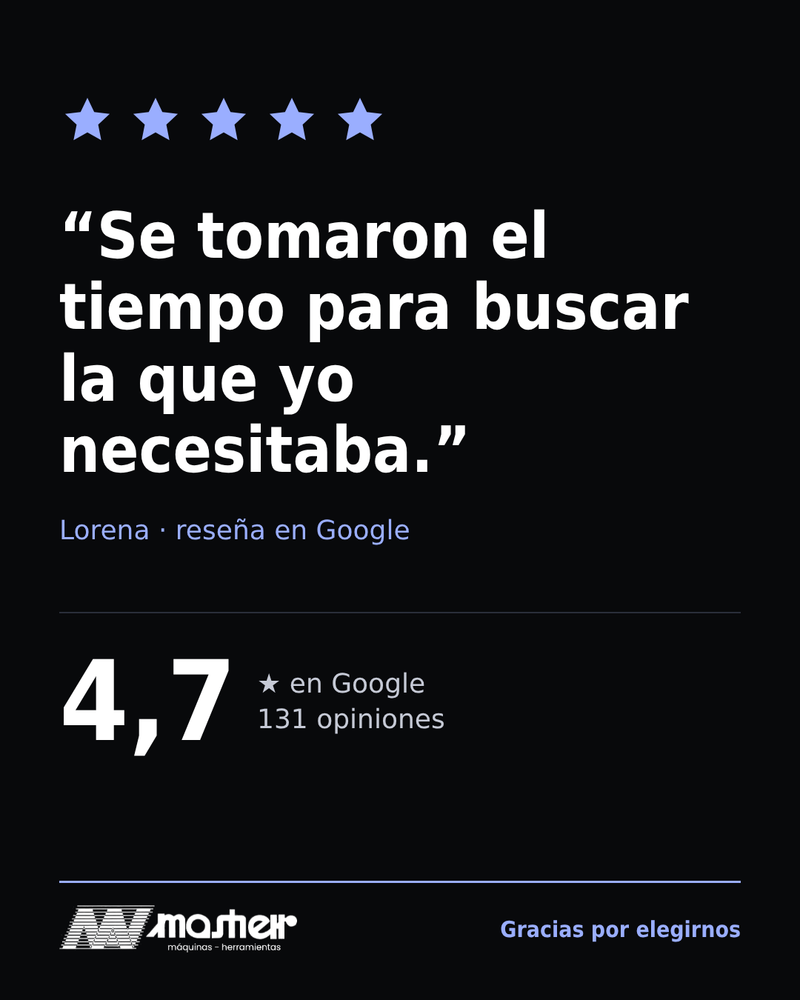
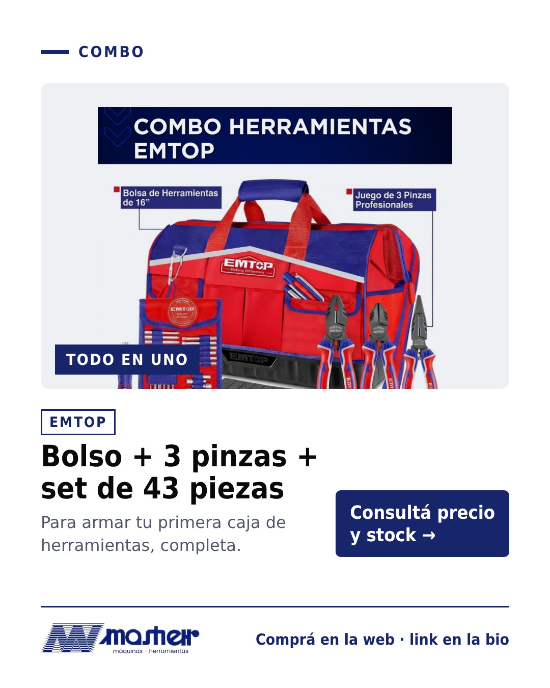
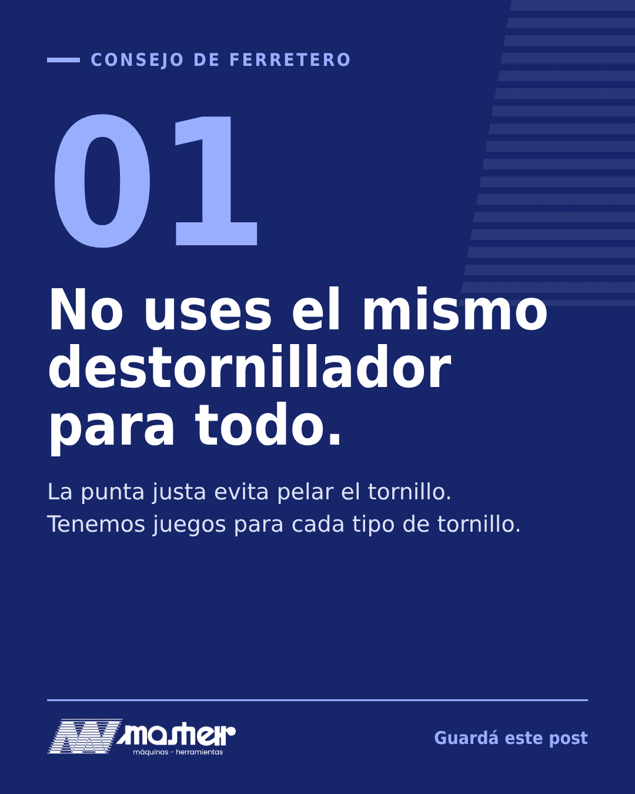
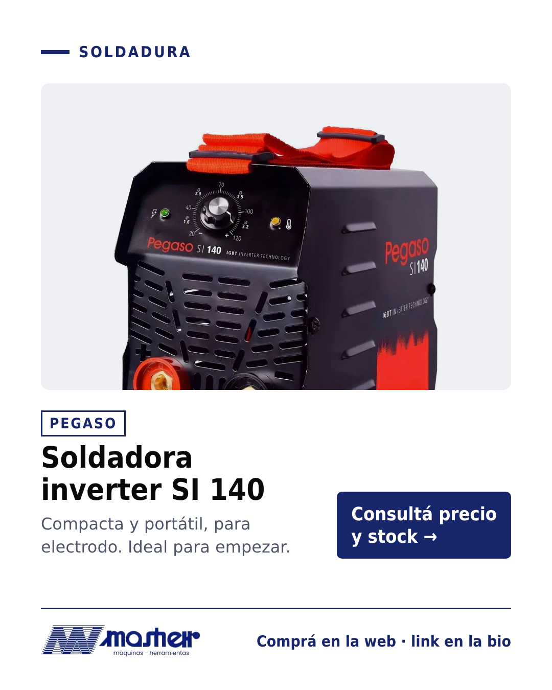
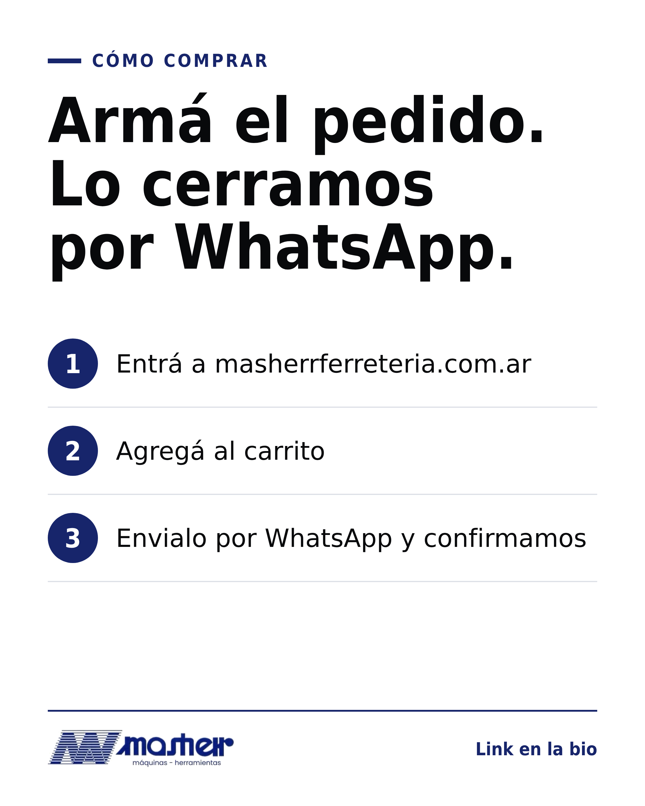
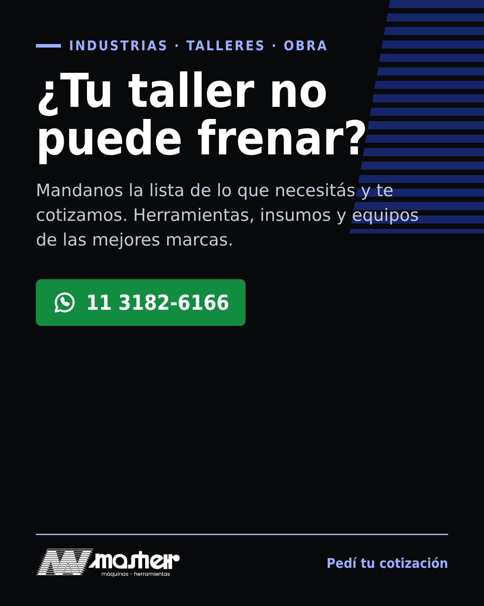
Así se ve el perfil: claro, oscuro y azul alternados. La placa 01 lleva una foto real de Guido en el mostrador (el espacio está marcado).
Masherr · Instagram05 / 12
Textos
Textos
TEXTOS PARA PUBLICAR.
Presentación de GuidoSoy Guido, de Masherr. Desde el mostrador de la ferretería de mi familia, en Villa Lynch, te ayudo a elegir la herramienta justa para tu trabajo. Contame qué tenés que hacer y lo resolvemos. 📍 Calle 38 4335 · 💬 WhatsApp en la bio
Producto de la semanaAmoladora angular 115 mm Vanden, 650 W: liviana y precisa para cortes y terminaciones en hierro, chapa y cerámica. Precio y stock en la web (link en la bio) o consultanos por WhatsApp.
Comparativa¿115 o 180? La de 115 es para cortes finos y terminaciones; la de 180, para cortes profundos y desbaste pesado. ¿Cuál necesitás? Contanos qué vas a cortar y te recomendamos. Guardá este post 🔖
Masherr · Instagram06 / 12
Textos
Textos
TEXTOS (CONTINUACIÓN).
Reseña realLo que más nos importa: que te vayas con lo que necesitás. Gracias Lorena por tu reseña ⭐ Somos 4,7 en Google con 131 opiniones. ¿Ya nos dejaste la tuya?
ComboTu primera caja de herramientas, completa: bolso rígido Emtop + 3 pinzas + set de 43 piezas con crique, puntas y tubos. Todo junto en un solo combo. Consultá el precio en la web o por WhatsApp.
Consejo de ferreteroConsejo de ferretero #01: no uses el mismo destornillador para todo. La punta justa evita pelar el tornillo (y renegar después). Tenemos juegos para cada tipo de tornillo. Mandale este post a quien usa un cuchillo de destornillador 😅
Masherr · Instagram07 / 12
Textos
Textos
TEXTOS (CONTINUACIÓN).
ProductoSoldadora inverter Pegaso SI 140: compacta, portátil y simple para empezar a soldar con electrodo. Consultá precio por WhatsApp o vení a verla al local y te explicamos cómo usarla. Siempre con máscara 👀
Cómo comprarComprar en Masherr es así: 1) entrá a masherrferreteria.com.ar 2) agregá lo que necesitás al carrito 3) envialo por WhatsApp. Te confirmamos precio, stock y retiro. Link en la bio.
Empresas¿Tu taller no puede frenar? Mandanos la lista de lo que necesitás y te cotizamos: herramientas, insumos y equipos para industrias, talleres y obra. WhatsApp 11 3182-6166.
Masherr · Instagram08 / 12
Stories
Stories
STORIES TODOS LOS DÍAS.
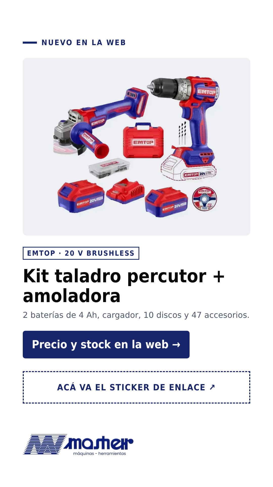
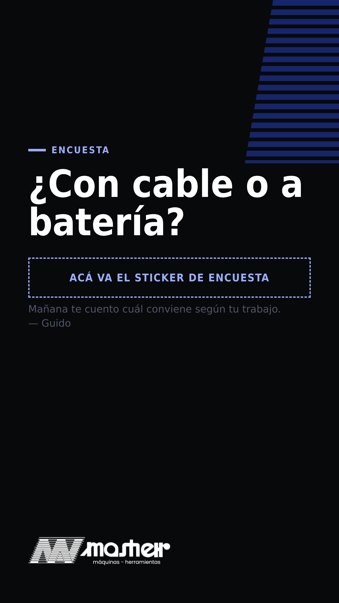
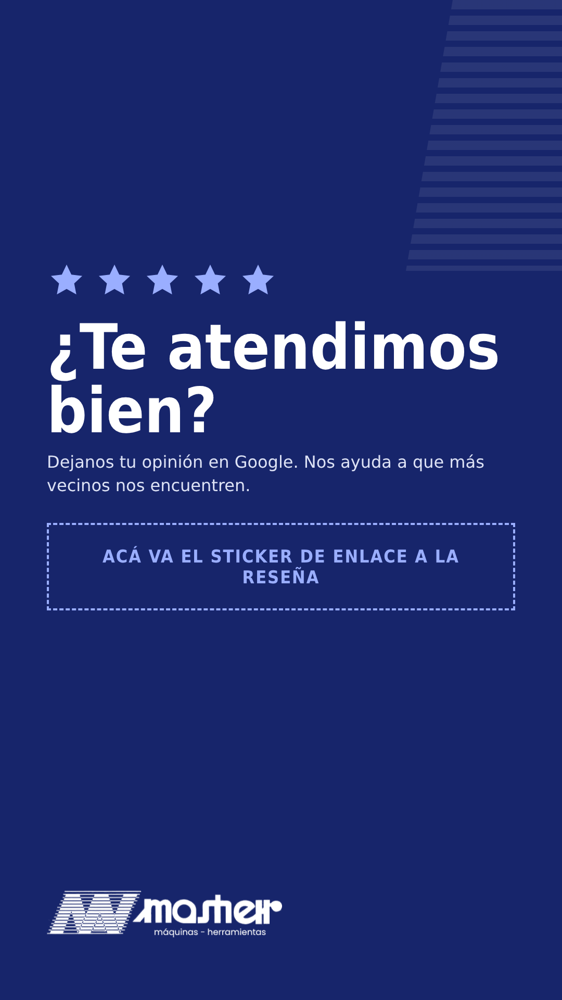
- Producto con sticker de enlace a la ficha en la web (reemplazar el recuadro punteado por el sticker).
- Encuesta o pregunta para generar conversación; responder al día siguiente con un video de Guido.
- Reseñas con sticker de enlace a g.page/r/CSTh9aafPrTYEBE/review.
- Destacadas: Productos · Cómo comprar · Reseñas · Empresas · El local.
Masherr · Instagram09 / 12
Calendario
Calendario
RITMO SEMANAL.
| Día | Feed | Stories |
|---|
| Lunes | Producto de la semana (placa) | Producto + enlace |
| Martes | — | Encuesta / pregunta |
| Miércoles | Reel (asesoramiento o humor) | Respuesta de Guido |
| Jueves | — | Detrás de escena del local |
| Viernes | Placa: consejo, reseña o combo | Reseñas + enlace |
| Sábado | — | “Abrimos hasta las 12:30” |
Total: 2 placas + 1 reel por semana en el feed y stories todos los días hábiles. Es un ritmo sostenible para un comercio.
Masherr · Instagram10 / 12
Venta
Venta
DE LA PUBLICACIÓN A LA VENTA.
- Link en la bio: masherrferreteria.com.ar (la tienda y el carrito).
- Botón de WhatsApp en el perfil (perfil de empresa → Botones de acción).
- Sin precios en las placas: el botón “Consultá precio y stock” lleva a la web o al WhatsApp. A cada “¿precio?” en comentarios, responder por mensaje privado con el link del producto: abre la conversación de venta.
- Responder comentarios y mensajes en el día, como Guido, con el link del producto.
- Etiquetas de producto de Instagram Shopping: opcional más adelante.
| Qué medir cada mes | Dónde |
|---|
| Guardados, compartidos y alcance de cada placa | Estadísticas de Instagram |
| Clics en el link y en WhatsApp | Instagram + Google Analytics (origen: instagram) |
| Pedidos que llegan desde el carrito | WhatsApp |
Masherr · Instagram11 / 12
Producción
Producción
CÓMO SEGUIR CREANDO PLACAS.
- Fotos de Guido: una sesión de 30 minutos en el local, con luz de día. 15 fotos alcanzan para 2 meses (mostrador, góndolas, con herramienta en mano, con clientes con permiso).
- Producto nuevo: me pasás el nombre (o lo cargás en la planilla) y genero la placa con el mismo diseño.
- Reseñas: elegir las mejores de Google; usar solo el nombre de pila.
- Precios: no van en las placas; mantenerlos actualizados en la planilla para que la web muestre el valor correcto.
Las placas se generan automáticamente a partir de los datos de la web, así que sumar un producto lleva minutos y siempre respeta el branding.
Masherr · Instagram12 / 12